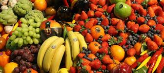

Seasonal fruits are mostly depending on your region, growing seasons and crop availability. In the heartfelt areas, seasons start in earlier and end in longer as some items like greens, carrots, beets, and radishes may be harvested in a year in the most temperature areas. In colder areas harvest times start later and end sooner. Mostly seasons will produce the fruits

| summer | winter |
|---|---|
| apple | pears |
| mango | kiwi |
| watermelon | banana |